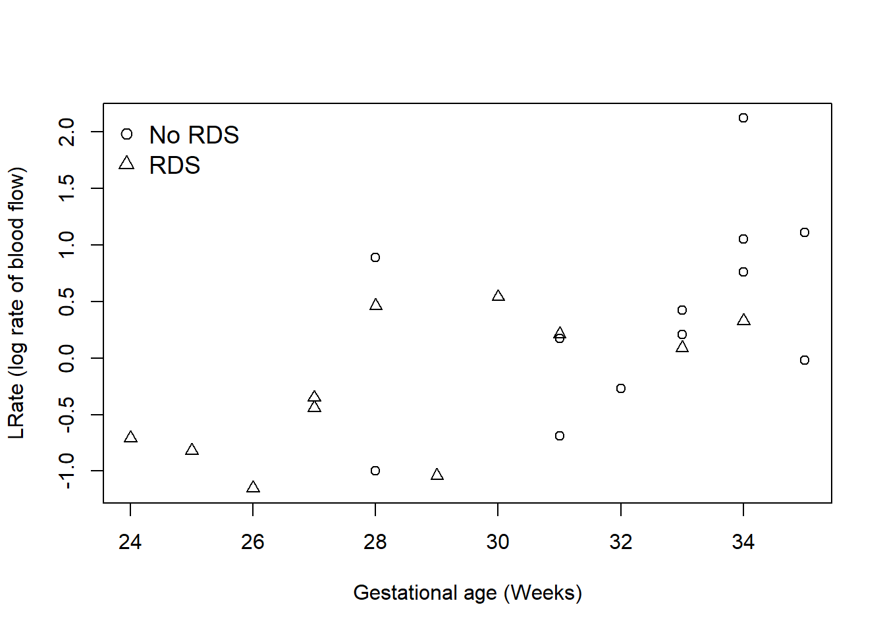

3 Example 2: Respiratory Distress Syndrome
We have seen this example in Lecture 15. To recap, premature babies often suffer from a variety of problems and respiratory distress syndrome (RDS) is a major one of these problems. It is thought that the occurrence of this syndrome might be related to a property of the blood called red cell deformability. This refers to the ability of red cells to change shape to pass through small pores. The rate (Lrate, on a log scale) of blood flow through a set of 3\(\mu\)m pores has been recorded for two groups of babies, some of whom suffer from respiratory distress syndrome (RDS = 2) and some who do not (RDS = 1). The gestational age (GA) in weeks of each baby is also recorded. These data were kindly provided by Queen Mother's Hospital, Glasgow.
Read in the data using:
rds <- read.csv("respiratory.csv")The dataset contains three columns:
C2: GA
C3: RDS (1 = does not suffer from RDS, 2 = suffers from RDS)
Use what you have learned from Example 1 to answer the following question of interest.
Question of interest: Are there any differences between the rate of blood flow measurements for babies that do, and do not, suffer from RDS, after correcting for the gestational age?
TASK:
- Produce a scatterplot to explore the relationship between
LrateandGA, labelled by RDS. Do you think this relationship differs byRDS? Which model do you think is most appropriate to describe the data?
plot(Lrate ~ GA, pch = RDS, data = rds, ylab = "LRate (log rate of blood flow)",
xlab = "Gestational age (Weeks)")
legend("topleft", legend = c("No RDS", "RDS"), pch = 1:2, bty = "n", cex = 1.2)
- Build regression models corresponding to different regression lines, parallel regression lines and a single regression line. Based on the ANOVA table, comment on which model is most appropriate.
Recall that the lm command for different regression lines has the form of lm(Y ~ X1 * X2) and that for parallel regression lines has the form of lm(Y ~ X1 + X2).
# different lines model
Model1 <- lm(Lrate ~ GA * RDS, data = rds)
anova(Model1)## Analysis of Variance Table
##
## Response: Lrate
## Df Sum Sq Mean Sq F value Pr(>F)
## GA 1 5.9335 5.9335 13.5081 0.001608 **
## RDS 1 0.0466 0.0466 0.1062 0.748129
## GA:RDS 1 0.0806 0.0806 0.1836 0.673147
## Residuals 19 8.3458 0.4393
## ---
## Signif. codes: 0 '***' 0.001 '**' 0.01 '*' 0.05 '.' 0.1 ' ' 1# parallel lines model
Model2 <- lm(Lrate ~ GA + RDS, data = rds)
anova(Model2)## Analysis of Variance Table
##
## Response: Lrate
## Df Sum Sq Mean Sq F value Pr(>F)
## GA 1 5.9335 5.9335 14.0830 0.001253 **
## RDS 1 0.0466 0.0466 0.1107 0.742844
## Residuals 20 8.4264 0.4213
## ---
## Signif. codes: 0 '***' 0.001 '**' 0.01 '*' 0.05 '.' 0.1 ' ' 1# single regression line model
Model3 <- lm(Lrate ~ GA, data = rds)
anova(Model3)## Analysis of Variance Table
##
## Response: Lrate
## Df Sum Sq Mean Sq F value Pr(>F)
## GA 1 5.9335 5.9335 14.706 0.0009637 ***
## Residuals 21 8.4730 0.4035
## ---
## Signif. codes: 0 '***' 0.001 '**' 0.01 '*' 0.05 '.' 0.1 ' ' 1In Model 1, we see that the \(p\)-value for GA:RDS is larger than 0.05, meaning that the interaction term is not statistically significant. Therefore, it is inappropriate to fit different regression lines to this dataset.
In Model 2, we see that the \(p\)-value for RDS is larger than 0.05, meaning that including the factor RDS is not useful in predicting Lrate.
In Model 3, we see that the \(p\)-value for GA is smaller than 0.05, meaning that including GA is useful in predicting Lrate. Therefore, the most appropriate model, among different regression lines, parallel regression lines and a single regression line, for this dataset is the single regression line model.
- Construct confidence intervals to compare the models.
The 95% confidence interval for \((\beta_1-\beta_2)\) is (, ).
The 95% confidence interval for \(\alpha_1 - \alpha_2 + \beta \left(\bar{x}_{2.} - \bar{x}_{1.}\right)\) is (, ).
Among different regression lines, parallel regression lines and a single regression line, the most appropriate model for this dataset is ,
The confidence interval should be constructed for \((\beta_1-\beta_2)\) in order to compare between different regression lines and parallel regression lines.
The confidence interval should be constructed for \(\alpha_1 - \alpha_2 + \beta \left(\bar{x}_{2.} - \bar{x}_{1.}\right)\) in order to compare between parallel regression lines and a single regression line.
# different lines model
x1 <- rds$GA[rds$RDS==1]
x2 <- rds$GA[rds$RDS==2]
xbar1 <- mean(x1)
xbar2 <- mean(x2)
GA <- rds$GA
GA[rds$RDS==1] <- GA[rds$RDS==1] - xbar1
GA[rds$RDS==2] <- GA[rds$RDS==2] - xbar2
Model1_b <- lm(rds$Lrate ~ GA * as.factor(rds$RDS))
#Remark 1: GA is the centred covariate, rather than the original rds$GA
#Remark 2: RDS is a factor and we need to tell this information to R by using as.factor(); otherwise R will treat it as a continuous variable.
summary(Model1_b)##
## Call:
## lm(formula = rds$Lrate ~ GA * as.factor(rds$RDS))
##
## Residuals:
## Min 1Q Median 3Q Max
## -0.87508 -0.43260 0.00379 0.20733 1.43714
##
## Coefficients:
## Estimate Std. Error t value Pr(>|t|)
## (Intercept) 0.39583 0.19132 2.069 0.0524 .
## GA 0.17222 0.08242 2.090 0.0503 .
## as.factor(rds$RDS)2 -0.65765 0.27665 -2.377 0.0281 *
## GA:as.factor(rds$RDS)2 -0.04507 0.10521 -0.428 0.6731
## ---
## Signif. codes: 0 '***' 0.001 '**' 0.01 '*' 0.05 '.' 0.1 ' ' 1
##
## Residual standard error: 0.6628 on 19 degrees of freedom
## Multiple R-squared: 0.4207, Adjusted R-squared: 0.3292
## F-statistic: 4.599 on 3 and 19 DF, p-value: 0.01392anova(Model1_b)## Analysis of Variance Table
##
## Response: rds$Lrate
## Df Sum Sq Mean Sq F value Pr(>F)
## GA 1 3.4979 3.4979 7.9633 0.01089 *
## as.factor(rds$RDS) 1 2.4822 2.4822 5.6510 0.02811 *
## GA:as.factor(rds$RDS) 1 0.0806 0.0806 0.1836 0.67315
## Residuals 19 8.3458 0.4393
## ---
## Signif. codes: 0 '***' 0.001 '**' 0.01 '*' 0.05 '.' 0.1 ' ' 1# calculate least squares estimates
y1 <- rds$Lrate[rds$RDS==1]
y2 <- rds$Lrate[rds$RDS==2]
ybar1 <- mean(y1)
ybar2 <- mean(y2)
Sx1x1 <- sum((x1 - xbar1)^2)
Sx2x2 <- sum((x2 - xbar2)^2)
Sx1y1 <- sum((x1 - xbar1) * (y1 - ybar1))
Sx2y2 <- sum((x2 - xbar2) * (y2 - ybar2))
print(c(ybar1,Sx1y1/Sx1x1,ybar2,Sx2y2/Sx2x2)) ## [1] 0.3958333 0.1722165 -0.2618182 0.1271416# calculate confidence intervals
RSS <- anova(Model1_b)[4,2]
n1 <- length(x1)
n2 <- length(x2)
t.val <- qt(0.975,df=n1+n2-4)
ese <- sqrt(RSS/(n1+n2-4)*(1/Sx1x1+1/Sx2x2))
lower <- -coef(Model1_b)[4] - t.val*ese
upper <- -coef(Model1_b)[4] + t.val*ese
print(c(lower,upper))## GA:as.factor(rds$RDS)2 GA:as.factor(rds$RDS)2
## -0.1751249 0.2652747The confidence interval for \((\beta_1-\beta_2)\) includes zero, meaning that it is likely that the interaction term does not have any effect in predicting the response variable. Therefore, we would prefer parallel regression lines over different regression lines.
# parallel lines model
Model2_b <- lm(rds$Lrate ~ GA + as.factor(rds$RDS))
summary(Model2_b)##
## Call:
## lm(formula = rds$Lrate ~ GA + as.factor(rds$RDS))
##
## Residuals:
## Min 1Q Median 3Q Max
## -0.89309 -0.40617 -0.03309 0.26879 1.48324
##
## Coefficients:
## Estimate Std. Error t value Pr(>|t|)
## (Intercept) 0.39583 0.18738 2.113 0.04742 *
## GA 0.14455 0.05017 2.881 0.00923 **
## as.factor(rds$RDS)2 -0.65765 0.27095 -2.427 0.02478 *
## ---
## Signif. codes: 0 '***' 0.001 '**' 0.01 '*' 0.05 '.' 0.1 ' ' 1
##
## Residual standard error: 0.6491 on 20 degrees of freedom
## Multiple R-squared: 0.4151, Adjusted R-squared: 0.3566
## F-statistic: 7.097 on 2 and 20 DF, p-value: 0.004686anova(Model2_b)## Analysis of Variance Table
##
## Response: rds$Lrate
## Df Sum Sq Mean Sq F value Pr(>F)
## GA 1 3.4979 3.4979 8.3022 0.00923 **
## as.factor(rds$RDS) 1 2.4822 2.4822 5.8915 0.02478 *
## Residuals 20 8.4264 0.4213
## ---
## Signif. codes: 0 '***' 0.001 '**' 0.01 '*' 0.05 '.' 0.1 ' ' 1# calculate least squares estimates
print(c(ybar1,ybar2,(Sx1y1+Sx2y2)/(Sx1x1+Sx2x2))) #least squares estimates based on formulae## [1] 0.3958333 -0.2618182 0.1445547Coef <-coef(Model2_b)
print(c(Coef[1],Coef[1]+Coef[3],Coef[2])) #read least squares estimates from R## (Intercept) (Intercept) GA
## 0.3958333 -0.2618182 0.1445547# calculate confidence intervals
Sy1y1 <- sum((y1 - ybar1)^2)
Sy2y2 <- sum((y2 - ybar2)^2)
RSS <- anova(Model2_b)[3,2]
# Sy1y1 + Sy2y2 - (Sx1y1+Sx2y2)^2/(Sx1x1+Sx2x2) #RSS based on formula
t.val <- qt(0.975, df = n1+n2-3)
ese <- sqrt(RSS/(n1+n2-3)*(1/n1+1/n2+(xbar2-xbar1)^2/(Sx1x1+Sx2x2)))
lower <- -coef(Model2_b)[3] + coef(Model2_b)[2]*(xbar2-xbar1) - t.val*ese
upper <- -coef(Model2_b)[3] + coef(Model2_b)[2]*(xbar2-xbar1) + t.val*ese
print(c(lower,upper))## as.factor(rds$RDS)2 as.factor(rds$RDS)2
## -0.5802435 0.8004354The confidence interval for \(\alpha_1 - \alpha_2 + \beta \left(\bar{x}_{2.} - \bar{x}_{1.}\right)\) includes zero, meaning that it is likely that RDS does not have any effect in predicting Lrate. Therefore, we would prefer a single regression line over parallel regression lines.